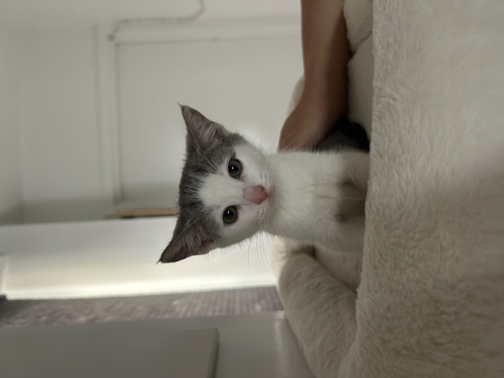
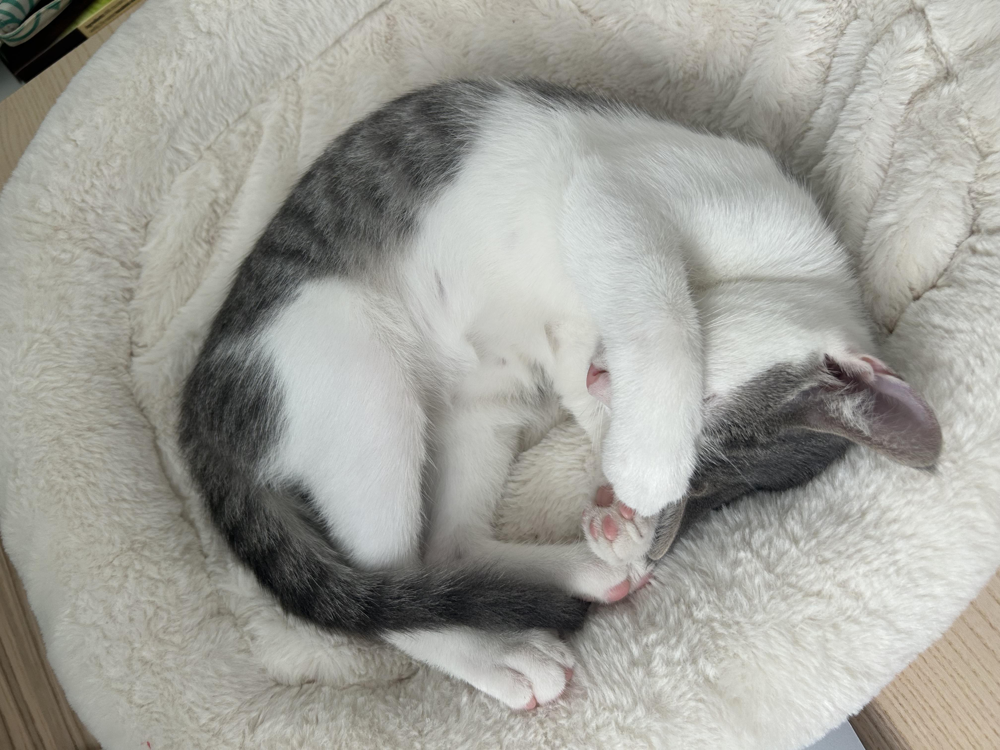
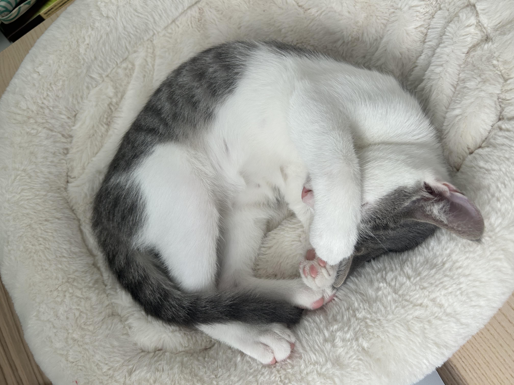
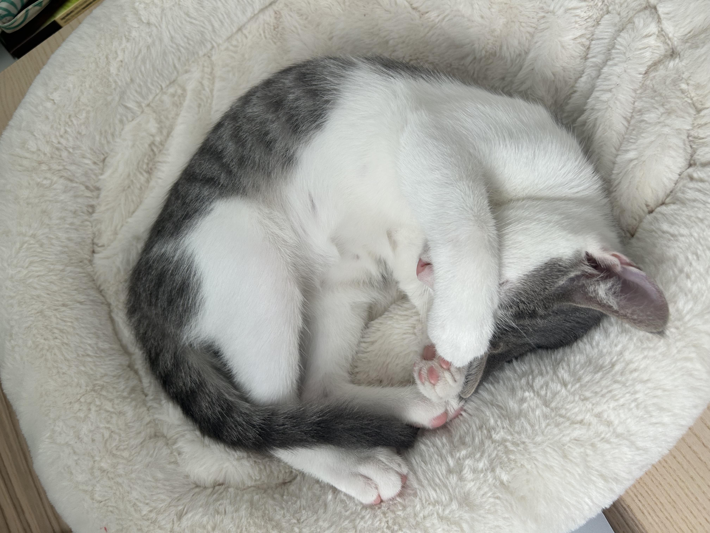
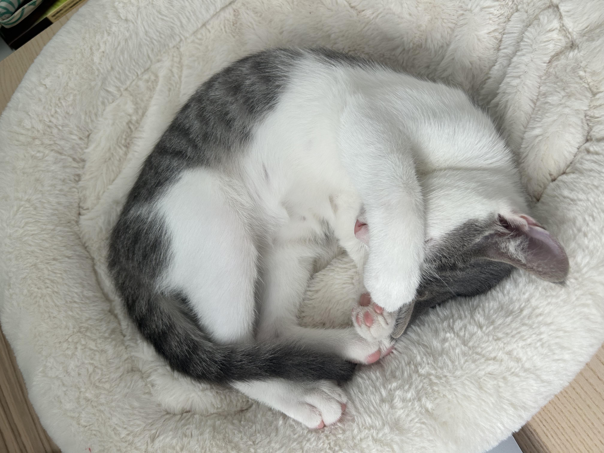

Greetings! The earth says hello!
My Name is Enoki, but you call me nooki or nuuuuuki
It's nice to meet you!

 



Meow there! Enoki here, the most adorable ball of fluff you'll ever lay eyes on! I may only be 5 months old, but trust me, I've got this whole world figured out. Here's a little secret just between us – I used to have three siblings, but they were totally cramping my style. So, I pulled out my most irresistible "adopt me" face and scored myself the purrfect humans. Now I've got an entire kingdom all to myself! My days are jam-packed with super important kitty business. First up, my morning parkour session – you should see me flying over furniture! Nap time is absolutely sacred around here. Oh, and let's not forget my crucial mission: keeping my humans wide awake after dark during prime hunting hours! Someone's gotta do it, right? I may be small, but my personality? Absolutely massive. My humans claim I'm named after some kind of mushroom, but have they even looked at me? Do I look like a fungus to you? The mystery continues... Life's pretty sweet when you're as adorable as moi. So in a nutshell, I have two humans at my beck and call, endless toys, and more boxes to sit in than I can count! -Enoki
Responsible for keeping the home free of any unwanted rodent guests. Utilize exceptional hunting skills and lightning-fast reflexes to ensure a pest-free environment.
Oversee all nap-related activities within the household. Set industry standards for quality catnaps, power snoozes, and extended slumber sessions.
Ensure the safety and security of the home by diligently monitoring for any suspicious movements, strange noises, or potential intruders. Respond with immediate action when necessary.